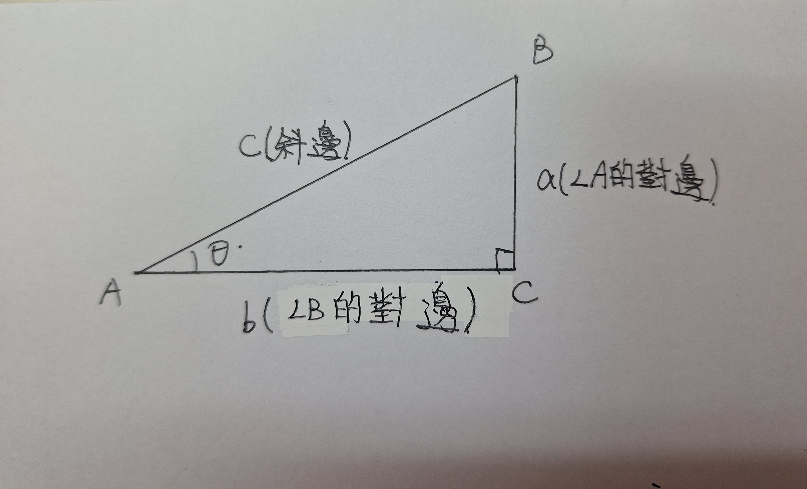

銳角三角函數
根據相似三角形的性質，知道一直角三角形的兩邊比，並且知道另一個相似三角形之一對應邊的邊長，即可求出另一對應邊的長
首先給定一個直角三角形ABC，其中角C為直角，可得相異兩邊比值有六個

為了便於稱呼及書寫，我們將這六個比值用數學符號紀錄如下：
當角A的度數為θ時，我們常用sinθ、cosθ、tanθ、cotθ、secθ與cscθ表示sinA、cosA、tanA、cotA、secA與cscA
當給定一個θ的值(0°<θ<90°)，則sinθ、cosθ、tanθ、cotθ、secθ與cscθ的值也隨之固定，因此，他們都是θ的函數。我們依序稱其為正弦函數、餘弦函數、正切函數、餘切函數、正割函數、餘割函數。
| sinA=a/c |
稱為角A的正弦 |
| cosA=b/c |
稱為角A的餘弦 |
| tanA=a/b |
稱為角A的正切 |
| cotA=b/a |
稱為角A的餘切 |
| secA=b/c |
稱為角A的正割 |
| cscA=a/c |
稱為角A的餘割 |